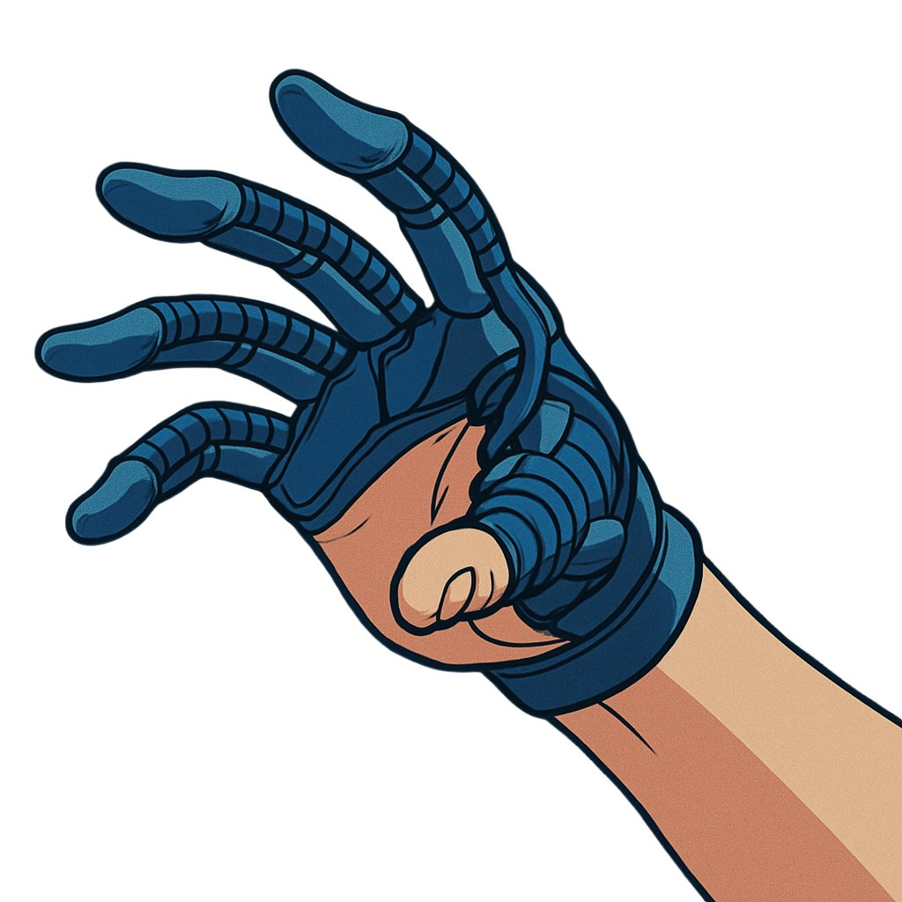
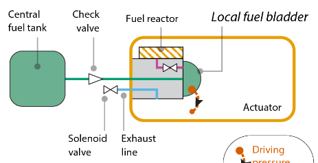
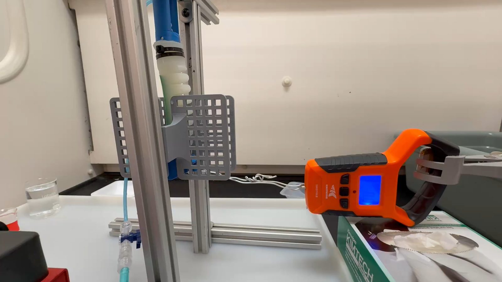
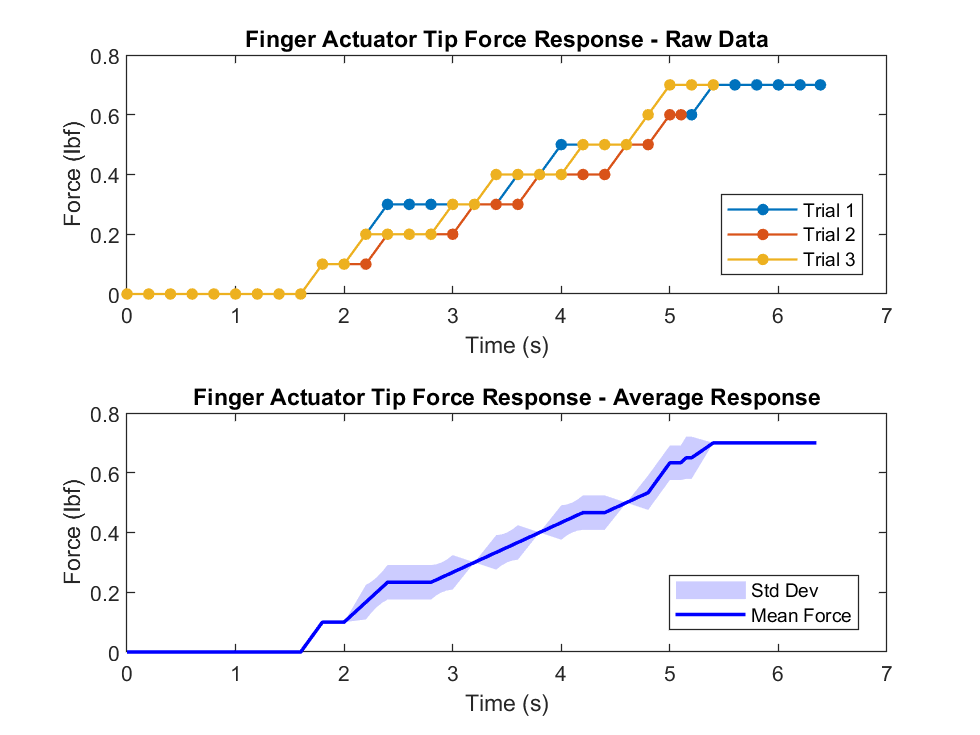
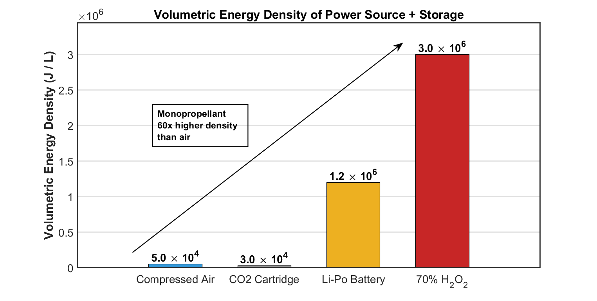
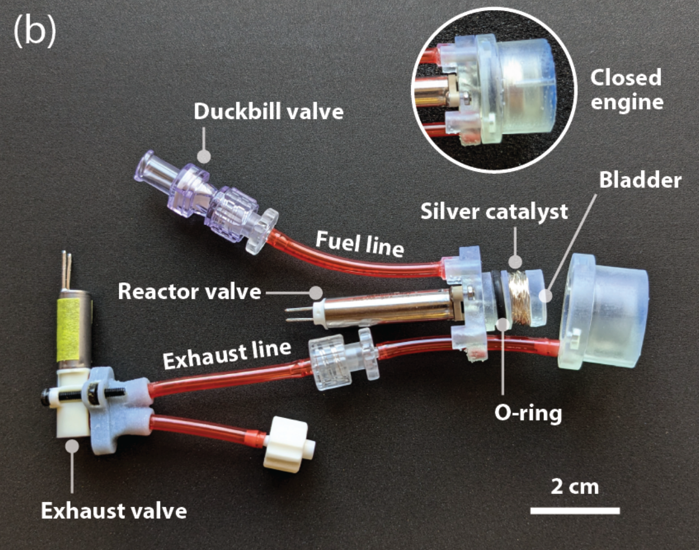
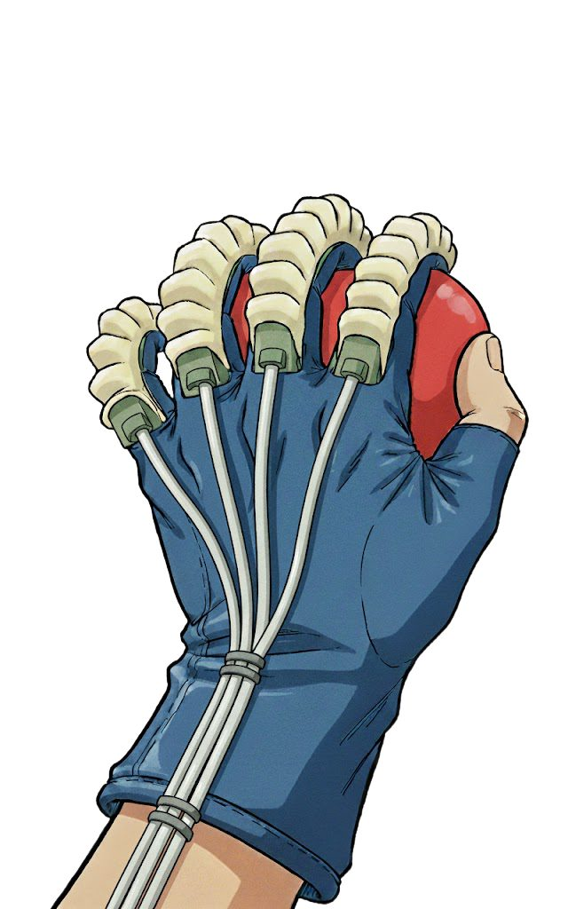

Replacing the bulky pneumatic backpack with chemistry: a miniature engine that decomposes hydrogen peroxide over a silver catalyst to drive a soft robotic finger actuator — untethered grip assistance for people with neuromuscular challenges.

Grip strength is fundamental to independence. It declines predictably with age and drops sharply with stroke, Parkinson's, and spinal cord injury — and for these populations, lost pinch force directly correlates with reduced quality of life. Soft robotic gloves can restore that force, but nearly every existing design is tethered to a desktop air supply or hauls a pump-and-reservoir backpack. The power source cancels out the assistance.
The root issue is energy density. Compressed air stores roughly 5×10⁴ J/L once you account for the tank. 70% hydrogen peroxide stores 3×10⁶ J/L as a stable liquid in a simple chemically-compatible container — a 60× improvement, no pressure vessel required.
I built a benchtop system coupling a miniature monopropellant engine (Gollob et al., 2025) to a soft silicone finger actuator I fabricated using soft-core injection molding. When the solenoid valve opens, H₂O₂ contacts a spooled silver-wire catalyst and flashes into steam and oxygen, pressurizing the actuator's segmented bellows. A fabric strain-limiting layer turns inflation into curling — a finger flexing.
From a single milliliter of fuel, the actuator reached a steady-state tip force of 3.1 N in ≈5.5 seconds — clearing the thresholds for operating a remote control (1.4 N) and opening a zipper (2.75 N). Because the test rig constrained the actuator only at base and tip, most input energy went into unconstrained deformation; these numbers are a lower bound, and a phalange-constrained rig (like a glove on a hand) should deliver substantially more.






This feasibility study is part of my graduate research at MIT, which develops a framework for quantitatively comparing pressure-generation technologies across soft robotics and medical devices. The next iteration couples electrolytic gas generation with monopropellant decomposition — a hybrid architecture aimed at exceeding the pressure limits of either approach alone. System integration (multi-actuator glove, onboard microcontroller, contained fuel delivery) and safety engineering for high-concentration H₂O₂ are the current focus.